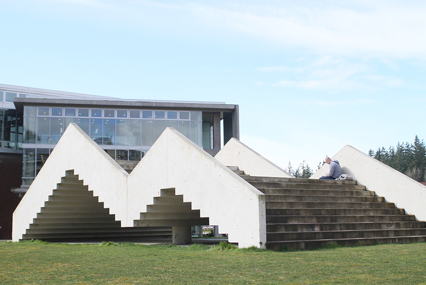

Please navigate yourself to the staircase facing north. The artist's plaque should be in front of these steps, with your back facing the Academic West Building.
Take a deep breath.
Be mindful of how many steps there are as you walk to the peak of the installation. How many steps does it take to reach the top?
click below
Often referred to by faculty and students as the Stairway to Nowhere, students are usually found utilizing this installation as a place to sit and relax between classes.
"Similar to the experience of facing a crowd or being alone, the climber discovers he is moving between private and public spaces. He pushes himself to the top where everyone can see him, then goes down, sinks quickly, almost out of sight to others, to his own private interior." - Brian Nauman 1989-1990
As you move between these private and public spaces within Stadium Piece, try to reflect on your surroundings with mindfulness.
Some questions to consider:
Where is my favorite spot on the art installation? Why?
What matters most to me?
If I was sure to succeed, what project or course of study would I begin tomorrow?
These questions closely align with those utilized in mindfulness practices. Many of us may often walk past this installation without a second thought. Mindfulness is the basic human ability to be fully present, aware of where we are and what we're doing, and not overly reactive or overwhelmed by what’s going on around us. Hopefully you enjoyed taking some time to yourself today, thank you for visiting!